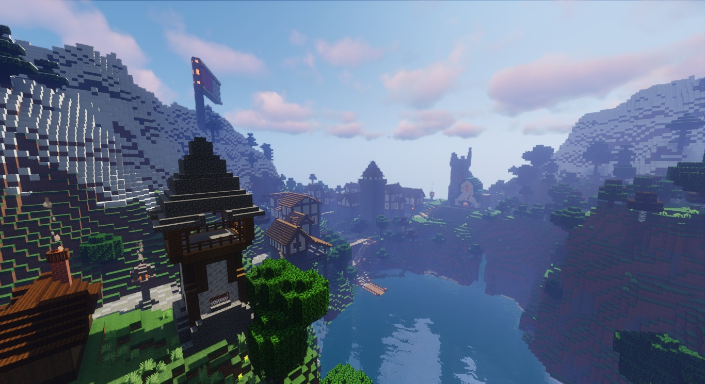
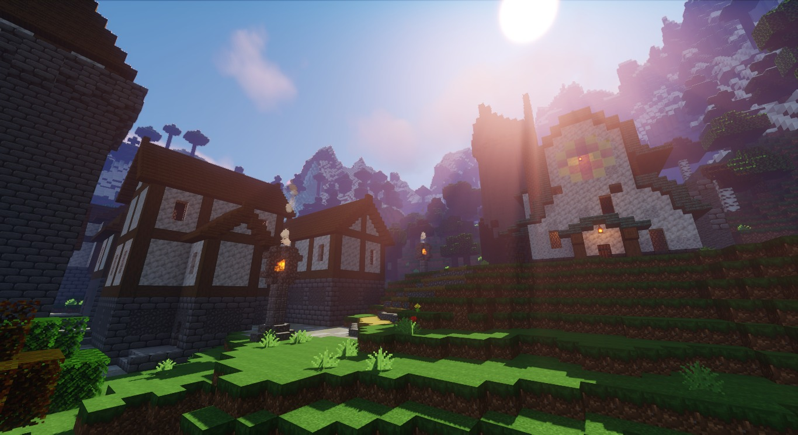
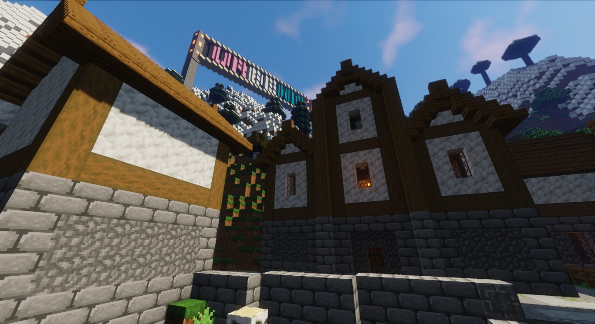
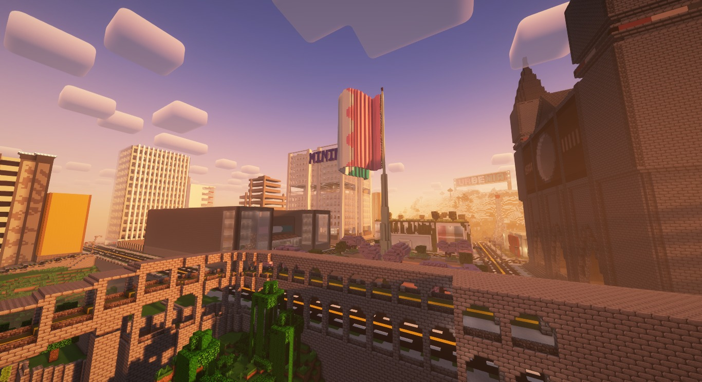
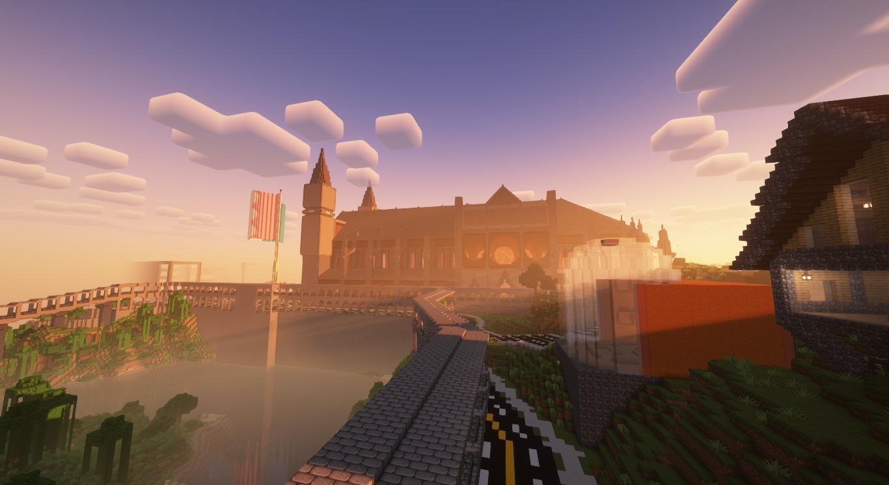
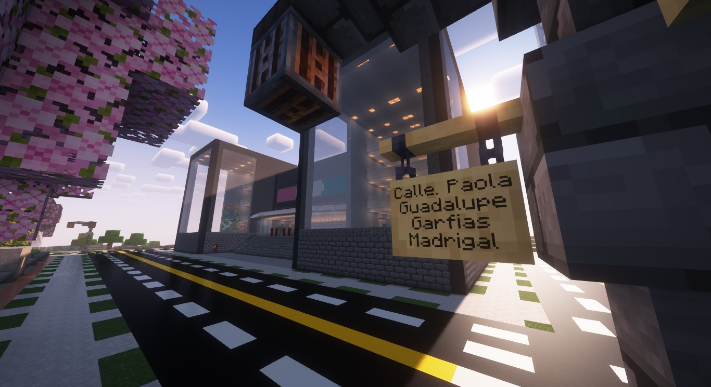
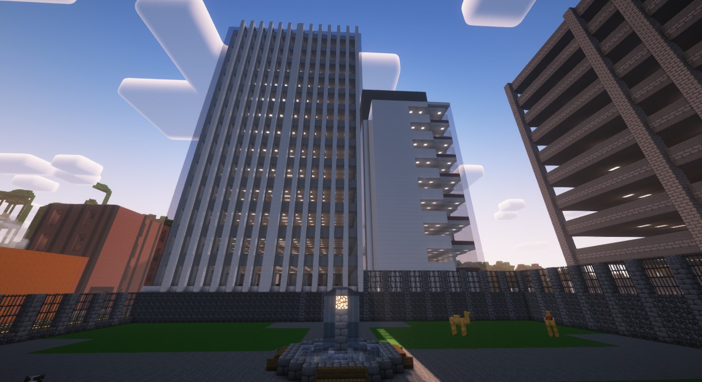
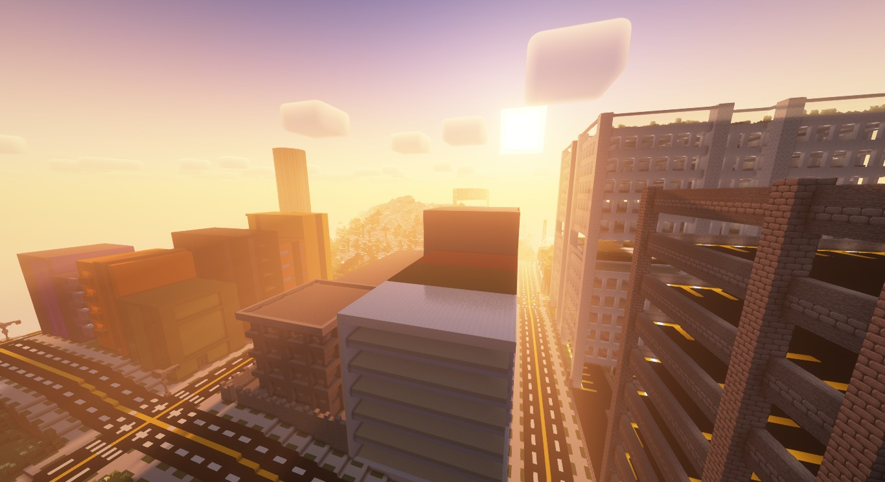

La secretaría del Máximo Senado de la República, el Gobierno de la Magnífica República de Urbenia y el Congreso Nacional de Austin te dan una calurosa bienvenida a este sitio web, en el que encontrarás documentos, enlaces e información relacionados a nuestra nación y a la que podrás consultar en el momento que desees.
Dicha página está destinada para que cada ciudadana y ciudadano tenga un único lugar dónde informarse u obtener información sobre la historia de Urbenia, las tiendas relacionadas a ella, canales de información, nombres de los estados, etc.
Sin embargo, la página aún no se encuentra finalizada, por lo que esperamos en un futuro agregar más características, mejorar el aspecto visual y finalmente colocarle un dominio propio, demostrando así que nuestro propósito es serio y estableciendo una relación más estrecha con cada ciudadana y ciudadano que conforma esta maravillosa nación.
Si gustas aportar a la página, puedes enviar un mensaje al grupo de facebook o un mensaje directo al canal nacional de Urbenia en Twitter.
Urbenia es un país ficticio fundado el 21 de diciembre de 2019 por Torrente (Carlos Castilla).
Ese mismo día, Torrente recibió un mensaje de Johan contándole que uno de sus amigos (Donovan) tenía un servidor de Minecraft dedicado a crear naciones tomando como referencia algún país existente, y establecerles una economía, cultura entre otras cosas.
Sin embargo para entrar se requería un nombre para la nación, por lo que Torrente quiso ponerle al país "Aztlán", pero ya estaba ocupado, así que pidió algo de tiempo para pensarlo y en ese lapso sólo lograba pensar en dos palabras: "Urbe" (Por sinonimo de ciudad) y "Armenia".
Aunque, desde entonces la idea de tomar como inspiración a la Ciudad de México y México en general siempre ha estado presente, así mismo, Uzbekistan fue tomado como referencia gracias a un trabajo escolar.
Ya en el servidor de Donovan, Torrente conoció a varias personas y a sus naciones, como a Christopher (Constructor de Roma), Josh (Constructor del Imperio Británico), Isaac ( Constructor de Hispania), entre otros, así como al mismo Johann (Constructor de Gondor) y a Donovan (Constructor de Arnus).
Entre todos constantemente se decidía si se cambiaba de mapa o no para no hacer monótona la experiencia y para variar en las construcciones que los jugadores podían hacer, por ello hay varias etapas de Urbenia en la que se distribuye de diferentes maneras, agregando y modificando estados.
Un día, Torrente decidió abandonar el servidor de Donovan y así fundar un servidor o mundo exclusivo para Urbenia en el que se pudiera desarrollar el país sin cambiar de mapa y consolidar una historia, sin embargo el trabajo no terminaría ahí, ya que Torrente decidió comenzar a desarrollar una página web para poder almacenar y mostrar la historia completa de Urbenia, misma que fue comenzada a escribirse por Paty, Frye y él mismo.
Ese camino aún no se termina de recorrer, pero tú puedes ser parte del proceso y de ser asi, contáctate con nuestro presidenta/e o dirígete a la página de Facebook para más información.
La Magnífica República de Urbenia es una nación megadiversa con toques utópicos, progesistas y socialistas, conformado por 28 estados de los Austin es la capital.
Nuestro maravilloso país se encuentra en el planeta Otwór, teniendo fronteras con el Imperio de Arnus, el Gran Imperio Romano, el Imperio Británico Galáctico y la República de Japón, paises con los que se mantienen relaciones de amistad muy fuertes.
Urbenia es un país independiente y por ello figura entre las naciones más grandes, poderosas e influyentes en todo el planeta.
La historia de Urbenia aún no termina, pero tú puedes ser parte de ella.









@papi_torrente
Copyright Urbenia™ Derechos Reservados